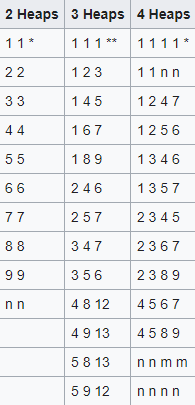

Winning strategies
The practical strategy to win at the game of Nim is for a player to get the other into one of the following positions, and every successive turn afterwards they should be able to make one of the smaller positions. Only the last move changes between misère and normal play.
* Only valid for normal play. ** Only valid for misère. For the generalisations, n and m can be any value > 0, and they may be the same.
Mathematical Theory
Nim has been mathematically solved for any number of initial heaps and objects, and there is an easily calculated way to determine which player will win and which winning moves are open to that player. The key to the theory of the game is the binary digital sum of the heap sizes, i.e., the sum (in binary), neglecting all carries from one digit to another. This operation is also known as "bitwise xor" or "vector addition over GF(2)" (bitwise addition modulo 2). Within combinatorial game theory it is usually called the nim-sum, as it will be called here. The nim-sum of x and y is written x ⊕ y to distinguish it from the ordinary sum, x + y. An example of the calculation with heaps of size 3, 4, and 5 is as follows:
.png)
An equivalent procedure, which is often easier to perform mentally, is to express the heap sizes as sums of distinct powers of 2, cancel pairs of equal powers, and then add what is left:
.png)
In normal play, the winning strategy is to finish every move with a nim-sum of 0. This is always possible if
the nim-sum is not zero before the move. If the nim-sum is zero, then the next player will lose if the other
player does not make a mistake.
To find out which move to make, let X be the nim-sum of all the heap sizes.
Find a heap where the nim-sum of X and heap-size is less than the heap-size; the winning strategy is to play
in such a heap, reducing that heap to the nim-sum of its original size with X. In the example above, taking
the nim-sum of the sizes is X = 3 ⊕ 4 ⊕ 5 = 2. The nim-sums of the heap sizes A=3, B=4, and C=5 with X=2
are
A ⊕ X = 3 ⊕ 2 = 1 [Since (011) ⊕ (010) = 001 ]
B ⊕ X = 4 ⊕ 2 = 6
C ⊕ X = 5 ⊕ 2 = 7
The only heap that is reduced is heap A, so the winning move is to reduce the size of heap A to 1 (by
removing two objects).
As a particular simple case, if there are only two heaps left, the strategy is to reduce the number of
objects in the bigger heap to make the heaps equal. After that, no matter what move your opponent makes, you
can make the same move on the other heap, guaranteeing that you take the last object.
When played as a misère game, Nim strategy is different only when the normal play move would leave only
heaps of size one. In that case, the correct move is to leave an odd number of heaps of size one (in normal
play, the correct move would be to leave an even number of such heaps).
These strategies for normal play and a misère game are the same until the number of heaps with at least two
objects is exactly equal to one. At that point, the next player removes either all objects (or all but one)
from the heap that has two or more, so no heaps will have more than one object (in other words, so all
remaining heaps have exactly one object each), so the players are forced to alternate removing exactly one
object until the game ends. In normal play, the player leaves an even number of non-zero heaps, so the same
player takes last; in misère play, the player leaves an odd number of non-zero heaps, so the other player
takes last.
In a misère game with heaps of sizes three, four and five, the strategy would be applied like this:
.png)